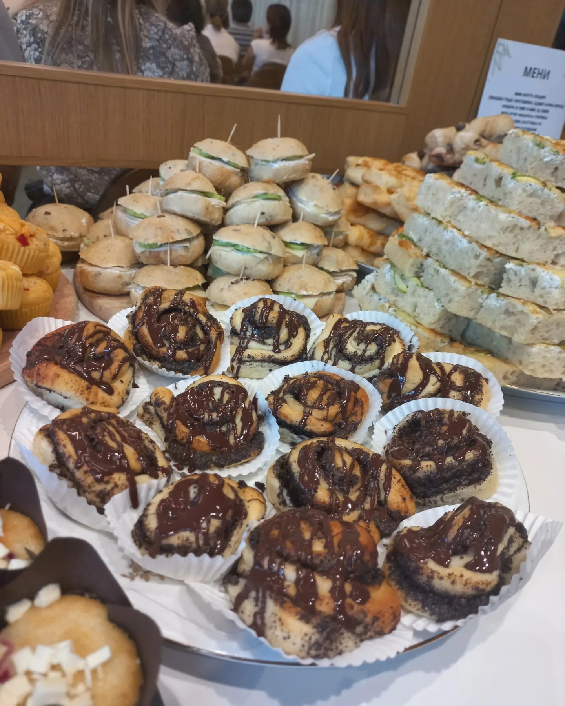
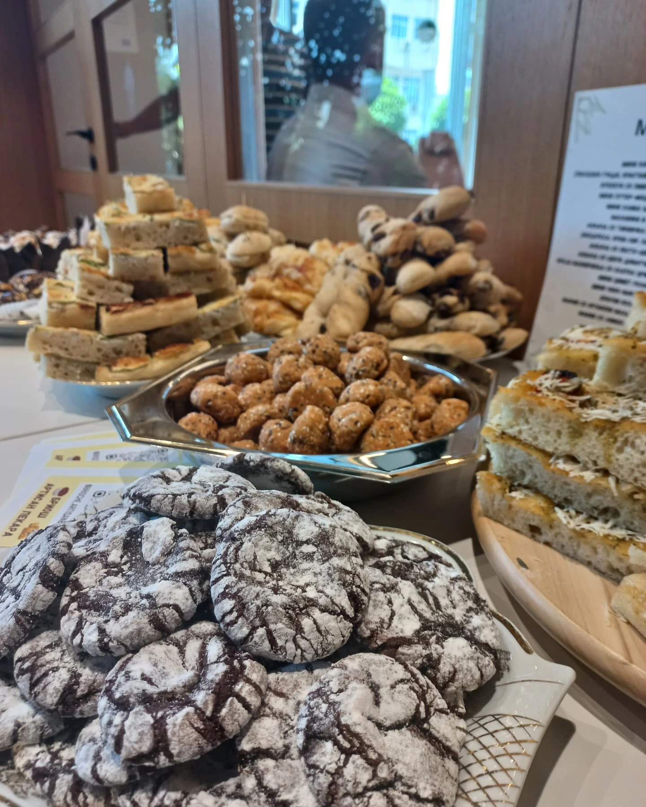
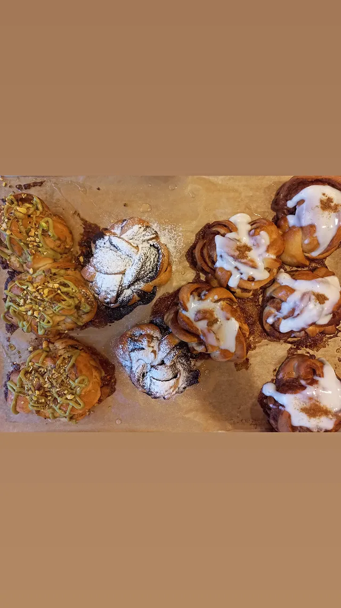
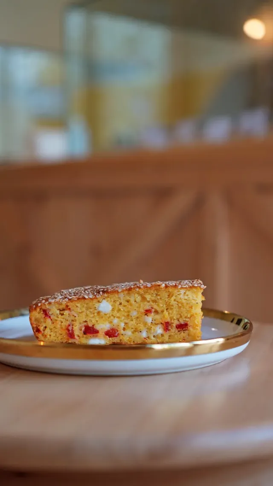
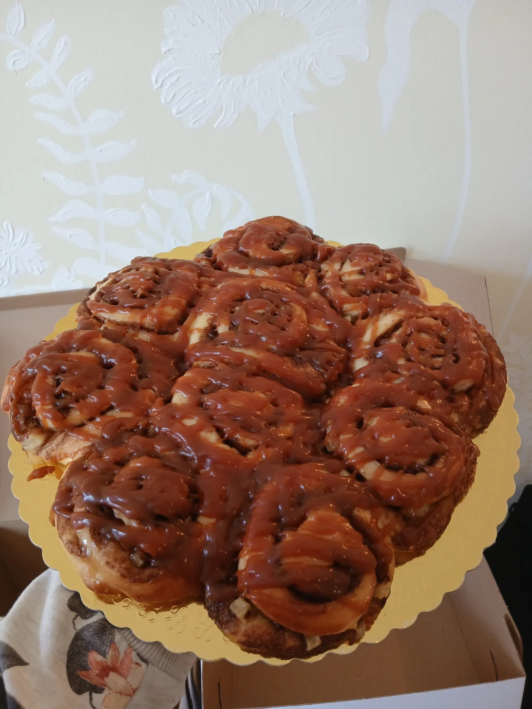
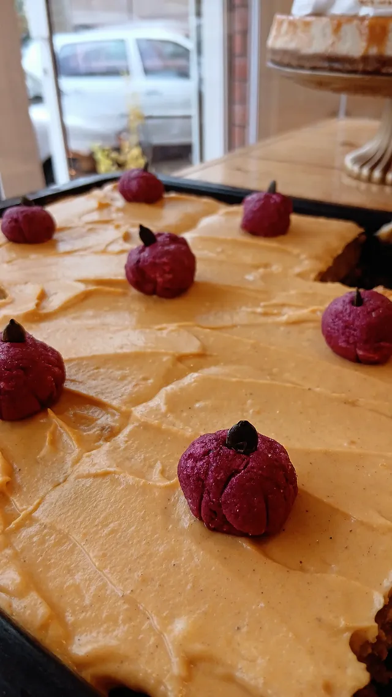
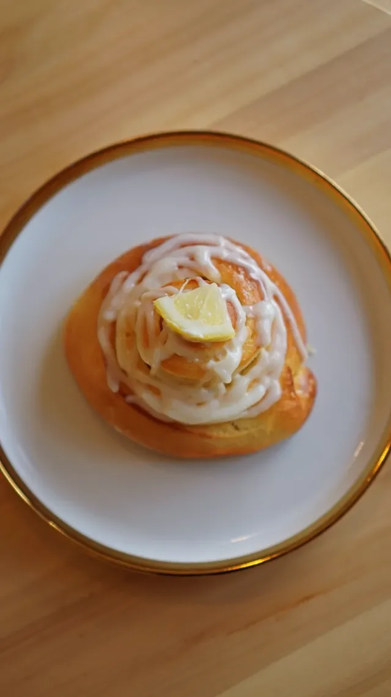
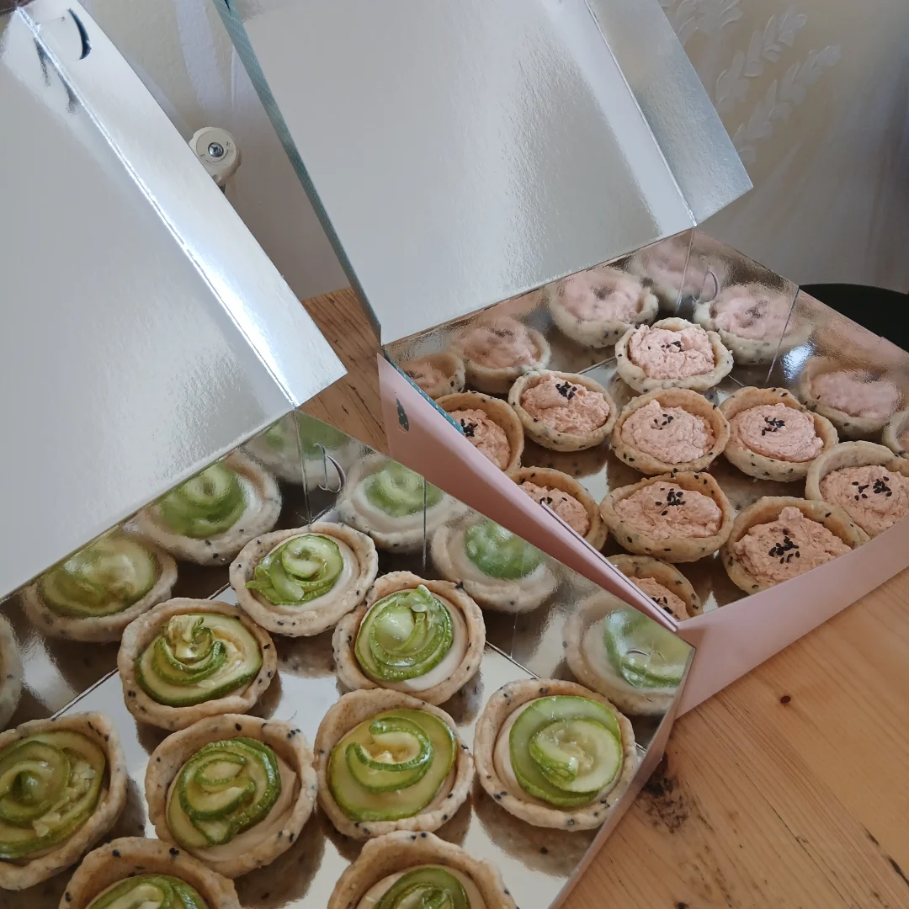
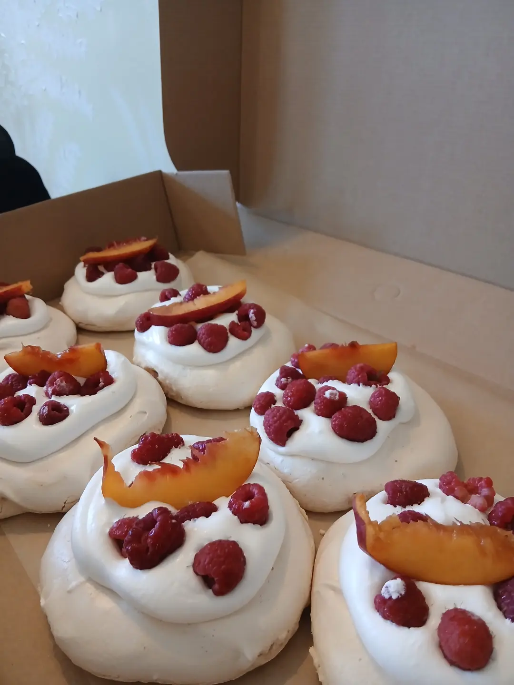
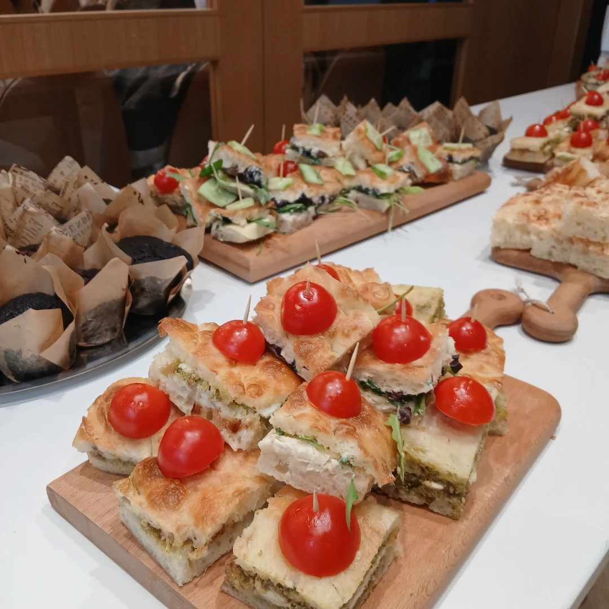

Малку производство, многу трпение. Ева меси сѐ рачно и од нула - без адитиви, без брзање.
Печеме ограничени количини секој ден - дојдете порано.

Ева ја отвора пекарата со едно правило: сѐ се меси истиот ден, без ништо готово однапред. Тестото расте бавно и природно, како во домашна кујна - не во фабрика.
Нема машини за брзо производство, нема конзерванси. Само брашно, вода, време и трпение, секое утро пред зори.
Што се пече оваа недела →
Менито се менува секоја недела - некогаш фокача со билки од сезона, некогаш ролнички со тиква и цимет. Ева секогаш додава нешто ново за постојаните муштерии.
Просторот е мал и скриен, но луѓето го наоѓаат - и секогаш се враќаат. Понудата е ограничена, па најдобро е да дојдете рано.
Неколку погледи на она што го печеме секое утро.








„Вистинскиот леб бара трпение, занает и малку време наутро.“Ева · Артисан Пекара Бриош
Споделуваме што се пече оваа недела и го покажуваме процесот зад секое пециво.
Следи нè на Instagram →